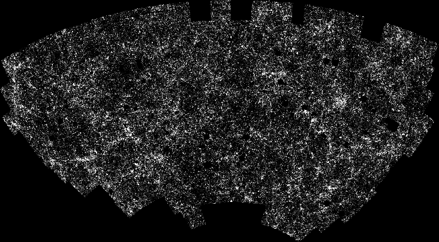

Figure 1-10
At billions of light-years from Earth, the galaxies and galaxy clusters would begin to take on the appearance of a flimsy film of cobwebs. This picture is a computerized ploting of the location of over a million galaxies. (Courtesy Michael Seldner) Remember that with pictures from the Hubble and Keck telescopes, astronomers now estimate that there are over 100 billion galaxies in the universe!